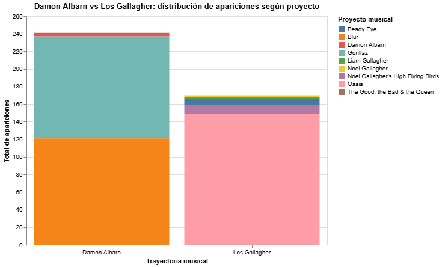
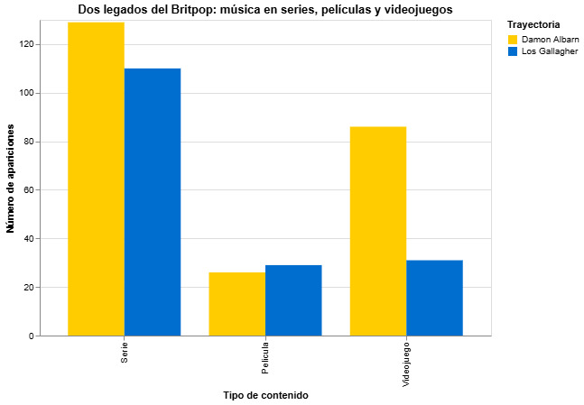

De listas de éxitos a las pantallas: la huella de Albarn y los Gallagher en la cultura popular

Otra forma de marcar presencia
La disputa entre Blur y Oasis quedó grabada en las listas de éxitos de los noventa, pero la historia de sus protagonistas no terminó cuando sus bandas dejaron de ocupar el centro de la escena. Lejos de los discos y los escenarios, durante estas tres décadas sus canciones han encontrado espacio en películas, series y videojuegos, convirtiéndose en parte de historias que trascienden el ámbito musical.
Para observar este recorrido, reunimos 411 registros de canciones de los distintos proyectos de Damon Albarn y los hermanos Gallagher presentes en estos tres formatos. Al comparar el total de apariciones, pese a que los Gallagher cuentan con más proyectos musicales entre ambos, el resultado favorece a Albarn: sus proyectos suman 241 apariciones, mientras que los hermanos de Mánchester reúnen 170.

Este resultado parece ser aplastante. Pero, ¿esta ventaja se repite de la misma manera en los tres productos culturales que analizamos?.
Conquistando los videojuegos
En los videojuegos, Damon Albarn vuelve a tomar la delantera frente a los Gallagher. Sus proyectos reúnen 86 apariciones, casi el triple de las 31 registradas por los hermanos de Mánchester.
El gran responsable de este resultado es Gorillaz, la banda virtual que Albarn creó junto al dibujante Jamie Hewlett. Ambos dieron vida a un grupo de personajes animados con identidades, personalidades e historias propias. Así, el proyecto fue mucho más allá de la música: construyó un universo visual y narrativo que se expandía a través de videoclips, ilustraciones y relatos sobre sus integrantes ficticios.
Esta propuesta le permitió a Gorillaz trascender los formatos tradicionales de la industria musical y conectar con otros espacios del entretenimiento. Su combinación de música, animación y ficción encontró un terreno especialmente afín en los videojuegos, donde los personajes y los mundos imaginarios también ocupan un lugar central.
De esta manera, las canciones de Albarn llegaron tanto a títulos tradicionales como FIFA y a experiencias virtuales como Fornite.

Distintos repertorios, mismas historias
Aunque Albarn vuelve a quedar por encima de los Gallagher cuando la música llega a la televisión, la ventaja es estrecha. En las series, sus proyectos acumulan 129 apariciones, frente a las 110 de los hermanos de Mánchester.
Parece ser que es difícil trazar una gran distancia cuando ambas trayectorias se cruzan en numerosas producciones británicas. Junto a los automóviles de Top Gear, las canciones de ambos bandos acompañaron a miles de adolescentes con Skins, Shameless y My Mad Fat Diary.
Entre historias de adolescencia, conflictos familiares y búsqueda de identidad, la televisión se convirtió en un punto de encuentro para diferentes repertorios que, atravesados por temáticas y emociones similares, encontraron su lugar en este tipo de relatos.

Proyectos hechos películas
En el cine, la balanza finalmente se inclina hacia los Gallagher, aunque por un margen mínimo. Los hermanos de Mánchester reúnen 29 apariciones, apenas tres más que las 26 registradas por los proyectos de Albarn.
Esta pequeña diferencia invita a mirar más allá de las cifras y detenerse en el tipo de producciones donde sus canciones han encontrado un lugar. En el caso de los Gallagher, su historia también ha llegado al cine a través de documentales como Oasis: Supersonic (2016), que reconstruye el ascenso de la banda y recupera parte de su repertorio como protagonista del relato.
De esta manera, la música no solo acompaña historias ajenas, sino que también forma parte de producciones dedicadas a contar la propia historia de sus intérpretes.

Una historia que sigue sonando
Como es posible apreciar, esta es una carrera de largo aliento. Y la rivalidad iniciada en 1995, incluso en estos días, parece generar más preguntas que respuestas.
Sin embargo, respecto a la cultura popular, Albarn supone llevar la delantera hasta el momento. No necesariamente porque sus canciones sean más populares, sino porque su trayectoria se ha extendido a través de proyectos capaces de ocupar distintos espacios.

Fuente: elaboración propia a partir de los registros recopilados.